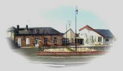

|
|
Le Conseil municipal installé le 12 juin 2020 |

La municipalité:
Le Maire:
Retraité du bâtiment |
| 1er Adjoint |
2ème Adjoint |
3ème Adjoint |
|
|
|
Les conseillers municipaux:
 |
Mme BERLAND Annick - Rétraité assistante maternelle |  |
M. CHERDLE Maxime - Agriculteur | |
 |
M. COLLET Sylvain Pilote Innovation |  |
Mme COAT Virginie Animatrice périscolaire | |
 |
Mme LAUGERAY Guilaine - retraitée secteur médical |  |
M. FERRAND Romain Technicien de maintenance | |
 |
M. GODARD Laurent - Paysagiste | Mme HERSANT Jocelyne Assistance de vie | ||
 |
Mme VILLEDIEU Béatrice - Assistante de Direction |  |
M. MAFILLE Yannick Technicien | |
 |
M. SZAFRANSKI François - Retraité |
|
Mme LEBRET Dominique Retraité | |
 |
Mme BESNARD Régine - Professeur de sport |  |
M. WEBER Jean-Luc Retraité | |
 |
Mme BUCHHOLZ Delphine Professeur des écoles |
Les délégués du conseil auprès des
S.E.R: (Syndicat des Eaux de Ruffin) S.B.V.4.R: (Syndicat du bassin versant des 4 Rivières) Energie Eure et Loir: (Syndicat Départemental d’Energies
d’Eure et Loir) E.L.i : Eure et Loir Ingénierie S.I.R.P: (Syndicat du Regroupement Pédagogique) C.C.A.S. (Centre Communal d'Action Sociale) Mission Locale : Réémeteur de Villemeux : |
Le maire, les adjoints plus....
Finances: |
Tout le Conseil Municipal |
Bâtiments- Urbanisme : |
COLLET Sylvain ; CHERDLE Maxime ; BESNARD Régine ; LAUGERAY Guilaine ; SZAFRANSKI Stanislas |
Voiries- Chemins - Cours d'eau : |
SZAFRANSKI Stanislas ; MAFILLE yannick ; GODARD Laurent ; |
| Information- Culture-Patrimoine: | HERSANT Jocelyne ; COAT Virginie ; BUCHHOLZ Delphine ; LAUGERAY Guilaine |
| Impôts | BESNARD Régine ; LAUGERAY Guilaine ; SZAFRANSKI Stanislas ; MAFILLE yannick ;HERSANT Jocelyne |
| Liste électorale | LAUGERAY Guilaine |
| Enfance-Jeunesse-Ecole | BESNARD Régine ; COAT Virginie ; MAFILLE yannick |
| Appel d'Offres | GODARD Laurent ; COLLET Sylvain ; CHERDLE Maxime ; BESNARD Régine ; FERRAND Romain ; MAFILLE yannick |